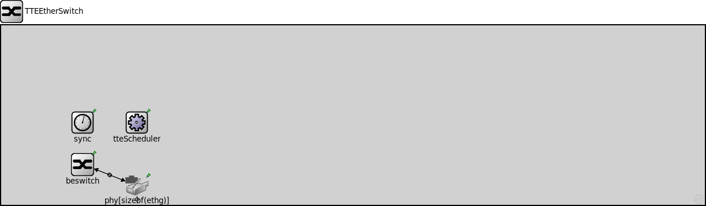
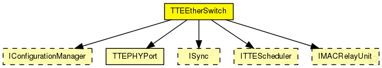
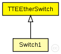

This documentation is released under the Creative Commons license
This documentation is released under the Creative Commons licenseModule for a TTEthernet Switch with variable number of ports. Contains a configurable best-effort implementation (beRelayUnitType like IMACRelayUnit), TTEPHYPort modules for physical ports, sync module (Sync) and a TTEScheduler module. The switch is configured by the provided TTEthernet XML network configuration (network_configuration parameter) and uses the device_name parameter to find its config. The configuration is done by the BufferManager that deletes itself at runtime.
See also: IMacRelayUnit, TTEPHYPort, Sync, TTEScheduler, BufferManager
Author: Till Steinbach
The following diagram shows usage relationships between types. Unresolved types are missing from the diagram. Click here to see the full picture.
The following diagram shows inheritance relationships for this type. Unresolved types are missing from the diagram. Click here to see the full picture.
| Name | Type | Description |
|---|---|---|
| Switch1 | compound module |
switch1: configuration in switch1.ini Forwards time-triggered messages with VL-ID 100 and rc messages with VL-ID 101 |
| Switch1 | compound module |
switch1: configuration in switch1.ini Forwards time-triggered messages with VL-ID 100 and rate-constrained messages with VL-ID 101 |
| Name | Type | Default value | Description |
|---|---|---|---|
| hardware_delay | double | 8us |
| Name | Value | Description |
|---|---|---|
| display | i=block/switch;bgb=1219,312 | |
| node | ||
| labels | node |
| Name | Direction | Size | Description |
|---|---|---|---|
| ethg [ ] | inout |
Physical ports of the switch |
| Name | Type | Default value | Description |
|---|---|---|---|
| beswitch.addressTableFile | string |
set to empty string if not used |
|
| beswitch.addressTableSize | int |
max size of address table |
|
| beswitch.agingTime | double |
max idle time for address table entries (when it expires, entry is removed from the table) |
|
| phy.tteOutput.tt_buffers | string | "" |
Comma seperated list of TTBuffers that send messages to this port |
| phy.tteInput.ct_marker | int | 0 |
Critical traffic marker of the buffer |
| phy.tteInput.ct_mask | int | 0 |
Critical traffic mask of the buffer |
| phy.tteInput.incomings | string | "" |
Comma seperated list of ctc modules the input uses |
| phy.mac.address | string | "auto" |
MAC address as hex string (12 hex digits), or "auto". "auto" values will be replaced by a generated MAC address in init stage 0. |
| phy.mac.duplexMode | bool | true |
must be set to "true", as EtherMACFullDuplex does not support half-duplex operation (parameter is present to reduce the risk of accidental misconfiguration) |
| phy.mac.txQueueLimit | int | 1000 |
maximum number of frames queued up for transmission in the internal queue (only used if queueModule==""); additional frames cause a runtime error |
| phy.mac.mtu | int | 1500B |
// // Module for a TTEthernet Switch with variable number of ports. // Contains a configurable best-effort implementation (beRelayUnitType like IMACRelayUnit), // TTEPHYPort modules for physical ports, sync module (Sync) and a TTEScheduler module. // The switch is configured by the provided TTEthernet XML network configuration // (network_configuration parameter) and uses the device_name parameter to find its config. // The configuration is done by the BufferManager that deletes itself at runtime. // // @see IMacRelayUnit, TTEPHYPort, Sync, TTEScheduler, BufferManager // // @author Till Steinbach module TTEEtherSwitch { parameters: @display("i=block/switch;bgb=1219,312"); @node; @labels(node,ethernet-node); double hardware_delay @unit(s) = default(8us); gates: // Physical ports of the switch inout ethg[] @loose @labels(EtherFrame-conn); submodules: // Implementation of the best-effort forwarding part beswitch: <default("MACRelayUnitNP")> like IMACRelayUnit { parameters: @display("p=141,242"); gates: lowerLayerIn[sizeof(ethg)]; lowerLayerOut[sizeof(ethg)]; } // Physical ports of the switch phy[sizeof(ethg)]: TTEPHYPort { parameters: @display("p=235,278,r,50"); //For the switch it is necessary to have promiscuous mode enabled promiscuous = true; } // Sync module for synchronisation of the scheduler sync: <default("DummySync")> like ISync { parameters: @display("p=141,169"); } // Buffer manager that creates the buffers according to the configuration configurationManager: <default("BaseConfigurationManager")> like IConfigurationManager { parameters: @display("p=999,999"); } // Scheudler for the device tteScheduler: <default("TTEScheduler")> like ITTEScheduler { parameters: @display("p=235,169"); } connections: for i=0..sizeof(ethg)-1 { phy[i].phys <--> ethg[i]; phy[i].upperLayerIn <-- beswitch.lowerLayerOut[i]; phy[i].upperLayerOut --> beswitch.lowerLayerIn[i]; } }
This documentation is released under the Creative Commons license